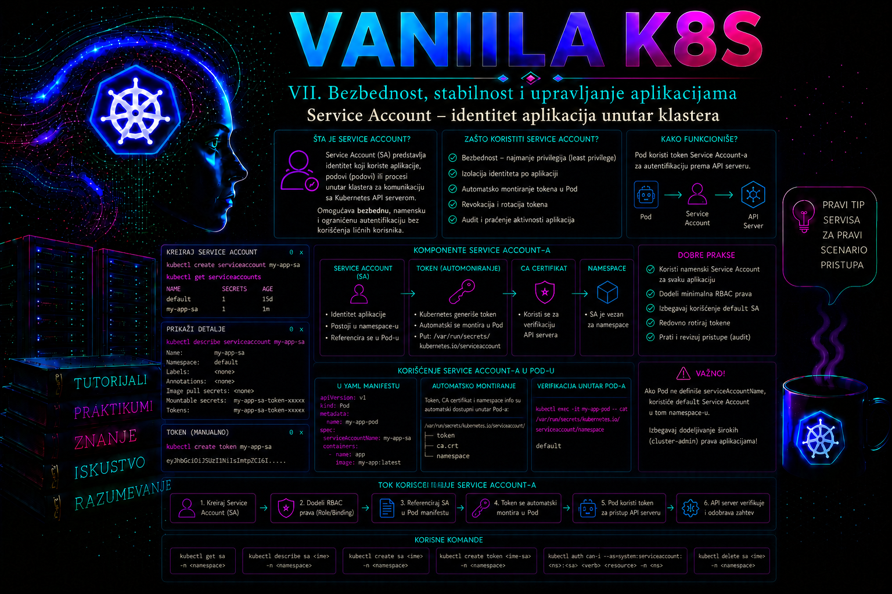

Vanilla Kubernetes

Aplikacija koja radi u Kubernetes podu često mora da komunicira sa Kubernetes API serverom: kontroler proverava objekte koje nadgleda, agent za monitoring otkriva podove, operator upravlja prilagođenim resursima, a automatizovani posao čita konfiguraciju ili ažurira status izvršavanja. Takav proces ne treba da koristi administratorski kubeconfig niti identitet fizičkog korisnika. Kubernetes za ovaj slučaj obezbeđuje objekat ServiceAccount, odnosno namenski, namespace-om ograničen identitet namenjen procesima koji rade unutar ili u vezi sa klasterom.
Service Account sam po sebi ne daje administrativna prava. On određuje ko šalje zahtev, dok RBAC pravila određuju šta taj identitet sme da uradi. Bez pravilno definisanog RoleBinding-a ili ClusterRoleBinding-a, posebno kreiran Service Account najčešće ima vrlo ograničen ili nikakav pristup zaštićenim API resursima. Ovakvo razdvajanje identiteta, autentikacije i autorizacije predstavlja osnovu bezbednog rada aplikacija u produkcionom klasteru.
Service Account kao identitet procesa
Kubernetes razlikuje korisničke identitete i Service Account identitete. Korisnički nalozi obično dolaze iz spoljnog sistema, kao što su korporativni direktorijum, OIDC provajder, klijentski sertifikati ili platforma za upravljanje identitetima. Kubernetes nema standardni API objekat User. Nasuprot tome, Service Account jeste Kubernetes API objekat iz osnovne grupe core/v1 i klaster njime upravlja kao delom deklarativne konfiguracije.
Kada se pod poveže sa Service Account objektom, API zahtevi poslati pomoću njegovog tokena autentifikuju se korisničkim imenom sledećeg oblika:
system:serviceaccount:<namespace>:<service-account-name>
Na primer, Service Account inventory-reader iz namespace-a plat-app predstavlja identitet:
system:serviceaccount:plat-app:inventory-reader
Autentifikovani identitet istovremeno pripada grupama system:serviceaccounts, system:serviceaccounts:plat-app i system:authenticated. RBAC pravila mogu se vezati za pojedinačni Service Account, za sve Service Account identitete jednog namespace-a ili, uz veliki oprez, za sve Service Account identitete u klasteru.
Namespace je deo identiteta. Dva Service Account objekta istog imena u različitim namespace-ovima nisu isti bezbednosni principal. plat-app/inventory-reader i test-app/inventory-reader mogu imati potpuno različita prava, tokene i životne cikluse. Zbog toga se pri RBAC proverama uvek moraju dokumentovati i naziv i namespace.
Default Service Account i eksplicitno dodeljivanje identiteta
Kubernetes automatski kreira Service Account pod nazivom default u svakom namespace-u. Ako manifest poda ne sadrži polje spec.serviceAccountName, pod koristi ovaj podrazumevani identitet. To ne znači da pod automatski dobija široka prava, ali znači da više nepovezanih aplikacija može deliti isti identitet. Takav model otežava audit, razdvajanje odgovornosti i primenu najmanjih privilegija.
Produkciona aplikacija koja pristupa Kubernetes API-ju treba da ima namenski Service Account. Naziv treba da opisuje funkciju aplikacije, a ne osobu, tim ili neodređenu privilegiju. Nazivi poput inventory-reader, backup-controller ili certificate-renewer daju jasniji trag od naziva admin-sa ili application-user.
Pod se povezuje sa identitetom poljem:
spec:
serviceAccountName: inventory-readerPolje se mora definisati pre kreiranja poda. Service Account postojećeg poda ne može se promeniti na mestu; potrebno je kreirati novi pod, što kod Deployment-a znači izmenu pod šablona i kontrolisani rollout. Administrator zato pre promene proverava broj replika, PodDisruptionBudget, readiness probe, strategiju ažuriranja i sposobnost aplikacije da podnese postepenu zamenu podova.
Token, CA sertifikat i namespace projekcija
Podu koji koristi Service Account može biti projektovan skup fajlova potreban za pristup API serveru. Standardna lokacija je:
/var/run/secrets/kubernetes.io/serviceaccount/
U toj putanji se obično nalaze fajlovi token, ca.crt i namespace. Token je nosilac identiteta, ca.crt omogućava proveru TLS sertifikata API servera, a fajl namespace aplikaciji saopštava namespace u kome pod radi. Postojanje tokena ne znači da zahtev ima dozvolu; token prvo omogućava autentikaciju, a zatim autorizacioni mehanizam, najčešće RBAC, odlučuje o zahtevu.
Savremeni Kubernetes koristi kratkotrajne, vezane Service Account tokene dobijene preko TokenRequest API-ja i projektovane u pod. Token je potpisani JWT sa izdavaocem (iss), jednom ili više publika (aud), vremenom izdavanja (iat), isteka (exp) i privatnim Kubernetes claim-ovima. Podrazumevana automatska projekcija namenjena je Kubernetes API serveru; kubelet traži token u ime poda i atomskom zamenom projektovanog fajla osvežava ga pre isteka. Klijentska biblioteka zato treba ponovo da čita token sa diska, a ne da njegov sadržaj zauvek zadrži u memoriji pri pokretanju procesa.
Od Kubernetes 1.22 podrazumevani model za podove jeste kratkotrajni, automatski rotirajući token projektovan kroz volume. Od Kubernetes 1.24 kontroler više ne kreira automatski dugotrajni Secret token za svaki Service Account. Zastarela uputstva koja očekuju da će se posle kreiranja Service Account-a pojaviti trajni Secret ne treba koristiti kao osnovu nove implementacije. Ručno kreiran Secret tipa kubernetes.io/service-account-token i dalje je moguć radi kompatibilnosti, ali je neistekajući bearer credential i koristi se samo kada TokenRequest i projekcija zaista nisu mogući, uz dokumentovano prihvatanje rizika, strogo ograničen pristup i plan migracije.
Token vezan za pod prestaje da bude validan kada pod ili Service Account više ne postoji; API server proverava UID vezanog objekta, čime ponovno kreiranje objekta istog imena ne oživljava stari token. Brisanje objekta koji je u završavanju ne opoziva token nužno istog trenutka: aktuelna implementacija odbija autentikaciju kada je od deletionTimestamp proteklo najmanje 60 sekundi. Zato trenutni incident response ne treba zasnivati samo na brisanju poda, već i na mrežnom ograničenju, uklanjanju prava i proveri audit traga.
Namenska projekcija: audience, trajanje i granica poverenja
Kada token nije namenjen podrazumevanoj publici API servera, aplikacija može dobiti zasebnu projekciju sa eksplicitnim audience i expirationSeconds. Primalac mora prihvatati upravo tu publiku i pouzdano proveravati potpis i izdavaoca. Token izdat za https://inventory.internal.example ne bi trebalo da bude prihvaćen kao token za drugu uslugu. Minimalno dozvoljeno traženo trajanje projekcije je 600 sekundi, dok API server može skratiti ili produžiti efektivno trajanje u skladu sa svojom konfiguracijom; aplikacija ne sme pretpostaviti da je zahtevana vrednost ujedno garantovani exp.
apiVersion: v1
kind: Pod
metadata:
name: audience-client
namespace: plat-app
spec:
serviceAccountName: inventory-reader
automountServiceAccountToken: false
containers:
- name: client
image: registry.example.invalid/platform/client:1.0.0
volumeMounts:
- name: identity
mountPath: /var/run/secrets/tokens
readOnly: true
volumes:
- name: identity
projected:
sources:
- serviceAccountToken:
path: inventory-token
audience: https://inventory.internal.example
expirationSeconds: 3600
Primer je arhitektonski obrazac, a ne manifest spreman za izvršavanje: slika i publika moraju odgovarati stvarnom registru i verifikatoru. Postavljanje automountServiceAccountToken: false sprečava paralelno ubacivanje podrazumevanog API tokena, dok se namenski token montira samo kroz eksplicitni projected volume. Ako aplikacija istovremeno treba Kubernetes API i drugi verifikator, projektuju se odvojeni tokeni sa odvojenim publikama i minimalnim pravima; token jedne publike ne prosleđuje se drugoj.
Komanda kubectl create token može izdati privremeni token za dijagnostiku ili strogo kontrolisanu integraciju:
kubectl -n plat-app create token inventory-reader --duration=10mDobijenu vrednost ne treba prikazivati u tiketima, terminalskim snimcima, CI logovima ili istoriji komandne linije. Privremeni token je i dalje tajna dok ne istekne. Za trajnu eksternu automatizaciju prednost imaju namenski identitet provajdera, workload identity mehanizam platforme, kratkotrajni tokeni ili drugi podržani sistem federacije, umesto statičkog Service Account tokena.
Automatsko montiranje tokena
Kubernetes može automatski montirati Service Account projekciju u kontejnere poda. Međutim, veliki broj aplikacija nikada ne poziva Kubernetes API. Web server koji prima poslovne HTTP zahteve, baza podataka ili statički frontend uglavnom nemaju razlog da poseduju API token. Ako takav kontejner bude kompromitovan, nepotrebno montiran token proširuje mogućnosti napadača, makar prava tog tokena bila ograničena.
Automatsko montiranje može se isključiti na Service Account objektu:
apiVersion: v1
kind: ServiceAccount
metadata:
name: web-frontend
namespace: plat-app
automountServiceAccountToken: falsePodešavanje se može zadati i na nivou poda:
spec:
automountServiceAccountToken: false
Vrednost definisana u specifikaciji poda ima prednost nad vrednošću Service Account objekta. Bezbedna početna politika jeste da aplikacije koje ne pozivaju Kubernetes API imaju automountServiceAccountToken: false, dok se montiranje omogućava samo za dokumentovane komponente kojima je API pristup stvarno potreban.
Isključivanje tokena ne sprečava pod da koristi Service, DNS, ConfigMap ili PersistentVolumeClaim na uobičajen način. Service Account token služi za autentifikaciju prema Kubernetes API serveru; nije potreban za običnu mrežnu komunikaciju sa drugim aplikacijama niti za montiranje volumena koje obavljaju kubelet i kontroleri u ime poda.
Veza između Service Account-a i RBAC-a
Service Account ne sadrži listu dozvola. Dozvole se definišu objektima Role ili ClusterRole, a zatim se identitet povezuje sa njima objektom RoleBinding ili ClusterRoleBinding. Ovo razdvajanje omogućava da ista uloga bude dodeljena različitim identitetima i da se promena prava izvrši bez menjanja aplikacionog Deployment-a.
Role ograničava pravila na jedan namespace. ClusterRole može opisati pristup resursima u celom klasteru ili pristup cluster-scoped resursima. Međutim, ClusterRole ne mora nužno biti dodeljen kroz ClusterRoleBinding. Kada se ClusterRole poveže RoleBinding-om, njegova pravila se primenjuju samo u namespace-u tog RoleBinding objekta, pod uslovom da su resursi namespace-scoped.
Za aplikaciju koja treba samo da čita podove i ConfigMap objekte u namespace-u plat-app, odgovarajući model je Role i RoleBinding u istom namespace-u. Dodeljivanje cluster-admin uloge bilo bi nesrazmerno zahtevu i omogućilo bi kompromitovanoj aplikaciji gotovo potpunu kontrolu nad klasterom.
RoleBinding subjekt za Service Account mora eksplicitno navesti vrstu, ime i namespace:
subjects:
- kind: ServiceAccount
name: inventory-reader
namespace: plat-appNamespace subjekta ne podrazumeva se iz namespace-a RoleBinding objekta i treba ga navesti čak i kada su isti. Greška u ovom polju može vezati ulogu za pogrešan identitet ili ostaviti aplikaciju bez očekivanih prava.
Najmanje privilegije i granice pristupa
Najmanje privilegije znače da Service Account dobija samo API grupe, resurse, glagole, namespace-ove i, kada je moguće, konkretne nazive objekata koji su neophodni za funkciju aplikacije. Glagoli get, list i watch nisu međusobno zamenljivi. get čita poznati objekat, list vraća kolekciju, a watch prati promene tokom vremena.
Kontroleru koji održava lokalni keš često su potrebni list i watch, dok aplikaciji koja čita jednu poznatu ConfigMap može biti dovoljan get uz resourceNames. Prava create, update, patch, delete, bind, escalate i impersonate treba davati samo nakon posebne analize jer mogu promeniti stanje ili proširiti ovlašćenja.
Čitanje Secret objekata je naročito osetljivo. Korisnik ili aplikacija koja može da pročita Secret potencijalno može preuzeti lozinke, ključeve, tokene i sertifikate drugih komponenti. Pravo kreiranja podova takođe može biti veoma moćno: pod može koristiti drugi Service Account ako prijemne kontrole i RBAC model to ne spreče, montirati dostupne podatke ili pokušati pristup čvoru. Procena privilegija zato ne sme da se završi samo pregledom naziva uloge.
Jedan pod ima jedan serviceAccountName. Svi kontejneri u podu dele identitet poda kada koriste automatski projektovan token. Ako dva procesa zahtevaju različite nivoe Kubernetes API privilegija, bezbednije je razdvojiti ih u dva poda nego pokušavati složenu ručnu projekciju različitih tokena u pojedinačne kontejnere.
Service Account nije zamena za svaku vrstu identiteta
Service Account je prirodan izbor za workload koji poziva Kubernetes API, ali nije univerzalni identitet za sve spoljne sisteme. Token namenjen Kubernetes API serveru ne treba automatski koristiti za prijavljivanje na bazu podataka, Git sistem, cloud API ili poslovni servis. Spoljni servis mora pouzdano proveravati izdavaoca, publiku, potpis, vreme važenja i druga relevantna svojstva tokena, a integracija mora biti arhitektonski podržana.
U upravljanim cloud okruženjima često postoje mehanizmi workload identity federacije koji povezuju Kubernetes Service Account sa cloud identitetom bez čuvanja dugotrajnih pristupnih ključeva u Secret objektu. Nazivi i postupci se razlikuju između provajdera, ali princip ostaje isti: kratkotrajna, proverljiva akreditacija ograničena na određeni workload sigurnija je od statičkog ključa ugrađenog u sliku ili manifest.
Service Account nije ni zamena za identitet administratora. Administrator ne treba svakodnevno da koristi aplikacioni token kroz kubeconfig. Time se gubi lična odgovornost u audit evidenciji, otežava opoziv pristupa i mešaju ljudski i mašinski identiteti.
ServiceAccount, imagePullSecrets i tajne workload-a
Polje imagePullSecrets na ServiceAccount objektu omogućava da novi podovi koji koriste taj identitet naslede reference na registry credential Secret-e iz istog namespace-a. Te reference ne daju aplikaciji Kubernetes API pravo da čita Secret: kubelet koristi akreditaciju pri preuzimanju slike. Ipak, svaki pod koji koristi taj ServiceAccount može indirektno dobiti mogućnost povlačenja slika koje ta akreditacija dozvoljava, pa deljenje ServiceAccount-a između nepovezanih aplikacija proširuje i registry trust boundary.
apiVersion: v1
kind: ServiceAccount
metadata:
name: inventory-reader
namespace: plat-app
imagePullSecrets:
- name: registry-inventory-readonly
Registry nalog treba da bude read-only, ograničen na potrebni projekat ili repozitorijum i redovno rotiran. imagePullSecrets nije mehanizam za proizvoljno montiranje poslovnih tajni u kontejner. Istorijska anotacija kubernetes.io/enforce-mountable-secrets, kojom se pokušavalo ograničiti koje tajne pod sme da montira, deprecated je od Kubernetes 1.32; za novu arhitekturu koriste se namenski namespace-i, odvojeni ServiceAccount identiteti, RBAC i admission politike.
Životni ciklus i promene u produkciji
Service Account može postojati nezavisno od Deployment-a, ali njegovo brisanje ili promena RBAC veza utiču na workload koji ga koristi. Brisanje RoleBinding-a zaustavlja buduće autorizovane zahteve čim nova pravila stupe na snagu, iako podovi mogu nastaviti da rade ako im API pristup nije potreban u svakoj operaciji. Brisanje samog Service Account-a sprečava kreiranje novih podova koji ga navode, dok ponašanje već pokrenutih podova zavisi od tokena, njegovog vezivanja i obnove.
Promene prava treba tretirati kao produkcione promene. Pre promene administrator evidentira vlasnika aplikacije, očekivane API operacije, postojeće RoleBinding i ClusterRoleBinding objekte, poslednje odbijene zahteve i plan povratka. Nakon promene proverava efektivna prava, rollout, aplikacione logove, API audit zapise i odsustvo neočekivanog pristupa.
Dodavanje privilegija može trenutno rešiti poruku Forbidden, ali takva poruka ne dokazuje da aplikaciji treba široka uloga. Potrebno je identifikovati tačan glagol, API grupu, resurs, naziv i namespace. Privremeno dodeljivanje cluster-admin radi „testiranja” predstavlja rizičnu praksu jer se takva prava lako zaborave, a test ne pokazuje minimalan skup koji je stvarno potreban.
Provera stanja i dijagnostika
Administrator prvo proverava da li Service Account postoji, da li pod zaista koristi očekivani identitet i da li je token projektovan kada je potreban:
kubectl -n plat-app get serviceaccount inventory-reader -o yaml
kubectl -n plat-app get pod -l app=inventory-agent \
-o custom-columns='NAME:.metadata.name,SA:.spec.serviceAccountName,PHASE:.status.phase'
kubectl -n plat-app describe pod -l app=inventory-agent
Efektivna prava najbezbednije se proveravaju impersonacijom identiteta, pod uslovom da administrator ima pravo impersonate:
kubectl auth can-i list pods \
--as=system:serviceaccount:plat-app:inventory-reader \
-n plat-app
kubectl auth can-i get secrets \
--as=system:serviceaccount:plat-app:inventory-reader \
-n plat-app
Očekivani odgovor prve komande može biti yes, a druge no. Opcija --list daje pregled dozvola, ali rezultat treba tumačiti pažljivo kada autorizacioni mehanizam ne može potpuno razrešiti sva pravila:
kubectl auth can-i --list \
--as=system:serviceaccount:plat-app:inventory-reader \
-n plat-app
kubectl auth can-i proverava odluku autorizacije, ali ne dokazuje da pod poseduje ispravan token, da može mrežno dosegnuti API server niti da TLS verifikacija radi. Zato se rezultat povezuje sa stvarnim identitetom poda, aplikacionim zahtevom i audit zapisom. Sledeće read-only komande, koje zahtevaju jq, pronalaze direktna vezivanja ServiceAccount-a:
kubectl get rolebindings -A -o json \
| jq -r '.items[]
| select(any(.subjects[]?;
.kind == "ServiceAccount" and .name == "inventory-reader" and
.namespace == "plat-app"))
| [.metadata.namespace, .metadata.name,
.roleRef.kind, .roleRef.name] | @tsv'
kubectl get clusterrolebindings -o json \
| jq -r '.items[]
| select(any(.subjects[]?;
.kind == "ServiceAccount" and .name == "inventory-reader" and
.namespace == "plat-app"))
| [.metadata.name, .roleRef.kind, .roleRef.name] | @tsv'
Rezultat ne obuhvata prava dobijena preko grupa system:serviceaccounts ili system:serviceaccounts:plat-app, niti odluke drugog autorizacionog plugina; zato inventar binding-a nije zamena za proveru efektivnih prava.
Poruka HTTP 401 Unauthorized najčešće ukazuje na problem autentikacije: token nedostaje, istekao je, nije namenjen tom API serveru ili nije pravilno poslat. HTTP 403 Forbidden znači da je identitet uglavnom prepoznat, ali autorizacija ne dozvoljava zahtev. HTTP 404 može značiti da objekat ne postoji, da je pogrešan namespace ili, u nekim integracijama, da sistem namerno ne otkriva postojanje resursa.
Aplikacioni logovi pokazuju URL, operaciju, kod odgovora i ponašanje retry mehanizma. Logovi API servera i Kubernetes audit evidencija, kada je audit konfigurisan, omogućavaju proveru korisničkog imena, grupa, glagola, resursa, namespace-a, odluke autorizacije i rezultata zahteva. Na systemd control-plane čvoru relevantni događaji mogu biti u journal-u kube-apiserver servisa ako je komponenta tako instalirana, dok kubeadm klasteri često izvršavaju API server kao static Pod čiji se log proverava preko runtime-a ili centralnog log sistema.
Kada druga usluga treba da potvrdi token i njegove privatne Kubernetes claim-ove, pouzdani mehanizam je API objekat TokenReview. Lokalno dekodiranje JWT-a može pomoći pri dijagnostici iss, aud i exp, ali ne potvrđuje potpis, opoziv ni postojanje vezanog objekta. Verifikator zato koristi podržanu klijentsku biblioteku i minimalno pravo create nad tokenreviews.authentication.k8s.io, ne loguje token i prihvata rezultat samo kada je status.authenticated: true, korisničko ime očekivano i vraćena publika odgovara usluzi.
# Kontrolisana dijagnostika; token se ne ispisuje niti čuva u Git-u.
TOKEN=$(kubectl -n plat-app create token inventory-reader \
--audience=https://inventory.internal.example \
--duration=10m)
kubectl create --raw /apis/authentication.k8s.io/v1/tokenreviews \
-f - <<EOF | jq '{authenticated: .status.authenticated,
username: .status.user.username,
audiences: .status.audiences,
error: .status.error}'
apiVersion: authentication.k8s.io/v1
kind: TokenReview
spec:
token: ${TOKEN}
audiences:
- https://inventory.internal.example
EOF
unset TOKENPrimer je namenjen laboratorijskoj proveri: shell promenljiva i memorija procesa nisu trezor, a TokenReview poziv zahteva posebno odobreno pravo. Trajni manifest koji sadrži bearer token nikada se ne kreira.
Integrisani praktikum: namenski identitet za aplikacioni inventar
Poslovni i tehnički kontekst. Platformski tim uvodi interni agent koji u namespace-u plat-app periodično čita listu podova i ConfigMap objekata kako bi formirao aplikacioni inventar. Agent ne sme da čita Secret objekte, menja workload-e niti pristupa drugim namespace-ovima. Cilj je implementirati namenski Service Account, namespace Role, RoleBinding i testni Deployment, a zatim dokazati i dozvoljeni i zabranjeni pristup.
Referentno okruženje. Koristi se podržan vanilla Kubernetes klaster sa omogućenim RBAC autorizacionim mehanizmom, funkcionalnim DNS-om i pristupom registru za preuzimanje testne slike. Administratorska radna stanica ima kubectl usklađen sa podržanim odstupanjem verzije u odnosu na API server. Svi objekti biće kreirani u namespace-u plat-app, a manifesti smešteni u direktorijumu service-account-lab.
Potrebna prava. Izvršilac mora imati pravo da čita namespace, Service Account, Role, RoleBinding, Deployment, Pod i događaje, kao i da u namespace-u plat-app kreira, menja i briše objekte korišćene u laboratoriji. Za komande sa --as potrebno je i pravo impersonacije Service Account identiteta. U produkciji se ova prava dodeljuju kroz odobren zahtev za promenu, a ne korišćenjem deljenog administratorskog naloga.
Preduslovi. Kontekst komande kubectl mora pokazivati na laboratorijski ili odobreni klaster. Namespace plat-app ne sme sadržati objekat istog imena kojim upravlja druga aplikacija.
-
Proveriti klaster, identitet izvršioca i početno stanje.
Pogrešan kubeconfig kontekst predstavlja jednu od najčešćih i najopasnijih operativnih grešaka. Pre kreiranja objekata proveravaju se API server, trenutno aktivni kontekst i postojeći namespace.
Ako poslednja komanda vratikubectl cluster-info kubectl config current-context kubectl auth whoami kubectl get namespace plat-appNotFound, namespace još ne postoji i može se kreirati u sledećem koraku. Druga greška, kao što suForbidden, TLS problem ili nedostupan API server, mora se rešiti pre nastavka. -
Kreirati radni direktorijum i osnovni manifest.
Direktorijum omogućava da promena ostane ponovljiva i pogodna za verzionisanje. Manifest kreira namespace i namenski Service Account. Automatsko montiranje ostavljeno je uključeno jer agent mora da poziva Kubernetes API.
Validacija: oba objekta moraju postojati, a Service Account ne treba da pokazuje automatski generisan dugotrajni token Secret.mkdir -p service-account-lab cd service-account-lab cat > 01-identity.yaml <<'EOF' apiVersion: v1 kind: Namespace metadata: name: plat-app labels: environment: lab owner: platform-team --- apiVersion: v1 kind: ServiceAccount metadata: name: inventory-reader namespace: plat-app labels: app.kubernetes.io/name: inventory-agent app.kubernetes.io/component: identity automountServiceAccountToken: true EOF kubectl apply -f 01-identity.yamlkubectl get namespace plat-app --show-labels kubectl -n plat-app get serviceaccount inventory-reader -o yaml -
Definisati najmanji potreban skup prava.
Agentu su potrebni
get,listiwatchnad podovima i ConfigMap objektima. Secret, Deployment i drugi resursi namerno nisu navedeni.
Validacija: RoleBinding mora pokazivati na tačnu Role i tačan Service Account.cat > 02-rbac.yaml <<'EOF' apiVersion: rbac.authorization.k8s.io/v1 kind: Role metadata: name: inventory-reader namespace: plat-app labels: app.kubernetes.io/name: inventory-agent rules: - apiGroups: [""] resources: ["pods", "configmaps"] verbs: ["get", "list", "watch"] --- apiVersion: rbac.authorization.k8s.io/v1 kind: RoleBinding metadata: name: inventory-reader namespace: plat-app labels: app.kubernetes.io/name: inventory-agent subjects: - kind: ServiceAccount name: inventory-reader namespace: plat-app roleRef: apiGroup: rbac.authorization.k8s.io kind: Role name: inventory-reader EOF kubectl apply -f 02-rbac.yamlkubectl -n plat-app describe role inventory-reader kubectl -n plat-app describe rolebinding inventory-reader kubectl -n plat-app get rolebinding inventory-reader \ -o jsonpath='{.subjects[0].namespace}/{.subjects[0].name}{" -> "}{.roleRef.kind}/{.roleRef.name}{"\n"}' -
Proveriti dozvole pre pokretanja aplikacije.
Ova provera otkriva grešku u RBAC konfiguraciji pre nego što se analizira aplikacioni kontejner.
Očekivani rezultat: prve dve komande vraćajukubectl auth can-i list pods \ --as=system:serviceaccount:plat-app:inventory-reader \ -n plat-app kubectl auth can-i watch configmaps \ --as=system:serviceaccount:plat-app:inventory-reader \ -n plat-app kubectl auth can-i get secrets \ --as=system:serviceaccount:plat-app:inventory-reader \ -n plat-app kubectl auth can-i list pods \ --as=system:serviceaccount:plat-app:inventory-reader \ -n defaultyes, dok provera Secret objekata i pristupa namespace-udefaultvraćano. Ako izvršilac dobije grešku impersonacije, provera mora biti izvedena nalogom koji ima odobreno pravoimpersonate, a ne zaobilaženjem kontrole. -
Kreirati testnu ConfigMap i Deployment.
Kontejner proverava projektovane fajlove i na svakih 30 sekundi poziva API za podove i ConfigMap objekte. TLS sertifikat API servera proverava se projektovanim CA sertifikatom; opcija koja isključuje TLS proveru namerno se ne koristi.
U laboratoriji je radi čitljivosti naveden verzijski tag slike. U produkciji se koristi odobreni interni registry, skenirana slika i nepromenljivi digest (cat > 03-workload.yaml <<'EOF' apiVersion: v1 kind: ConfigMap metadata: name: inventory-settings namespace: plat-app data: scanInterval: "30" scope: "namespace" --- apiVersion: apps/v1 kind: Deployment metadata: name: inventory-agent namespace: plat-app labels: app: inventory-agent spec: replicas: 1 selector: matchLabels: app: inventory-agent template: metadata: labels: app: inventory-agent spec: serviceAccountName: inventory-reader automountServiceAccountToken: true securityContext: seccompProfile: type: RuntimeDefault containers: - name: api-client image: curlimages/curl:8.12.1 command: - /bin/sh - -ec args: - | SA_DIR=/var/run/secrets/kubernetes.io/serviceaccount API=https://${KUBERNETES_SERVICE_HOST}:${KUBERNETES_SERVICE_PORT_HTTPS} NS=$(cat ${SA_DIR}/namespace) test -s ${SA_DIR}/token test -s ${SA_DIR}/ca.crt while true; do echo "Checking API access in namespace ${NS}" curl --fail --silent --show-error \ --cacert ${SA_DIR}/ca.crt \ -H "Authorization: Bearer $(cat ${SA_DIR}/token)" \ "${API}/api/v1/namespaces/${NS}/pods" \ -o /tmp/pods.json curl --fail --silent --show-error \ --cacert ${SA_DIR}/ca.crt \ -H "Authorization: Bearer $(cat ${SA_DIR}/token)" \ "${API}/api/v1/namespaces/${NS}/configmaps" \ -o /tmp/configmaps.json echo "Allowed API checks completed" sleep 30 done securityContext: allowPrivilegeEscalation: false runAsNonRoot: true capabilities: drop: ["ALL"] resources: requests: cpu: 10m memory: 16Mi limits: cpu: 100m memory: 64Mi EOF kubectl apply -f 03-workload.yaml kubectl -n plat-app rollout status deployment/inventory-agent --timeout=120simage@sha256:...), jer tag sam po sebi nije kriptografska garancija istih bajtova. Validacija: Deployment mora imati jednu dostupnu repliku, a pod mora koristitiinventory-reader.kubectl -n plat-app get deployment inventory-agent kubectl -n plat-app get pods -l app=inventory-agent -o wide kubectl -n plat-app get pod -l app=inventory-agent \ -o jsonpath='{range .items[*]}{.metadata.name}{" SA="}{.spec.serviceAccountName}{" ready="}{.status.containerStatuses[0].ready}{"\n"}{end}' -
Proveriti aplikacione logove i projektovani identitet.
Log mora potvrditi uspešno izvršavanje dozvoljenih zahteva. Sadržaj tokena se ne ispisuje.
Očekivani rezultat: log periodično prikazujekubectl -n plat-app logs deployment/inventory-agent --tail=20 POD_NAME=$(kubectl -n plat-app get pod -l app=inventory-agent \ -o jsonpath='{.items[0].metadata.name}') kubectl -n plat-app exec "$POD_NAME" -- \ sh -c 'id; ls -l /var/run/secrets/kubernetes.io/serviceaccount; cat /var/run/secrets/kubernetes.io/serviceaccount/namespace'Allowed API checks completed, direktorijum sadrži token, CA sertifikat i namespace, a poslednja komanda vraćaplat-app. Token se ne kopira van poda. -
Izvesti negativni test pristupa Secret objektima.
Test dokazuje da autentikovani workload ne može čitati tajne. API odgovor i HTTP kod čuvaju se samo u privremenim fajlovima unutar kontejnera.
Očekivani rezultat: HTTP kod jekubectl -n plat-app exec "$POD_NAME" -- sh -c ' SA_DIR=/var/run/secrets/kubernetes.io/serviceaccount API=https://${KUBERNETES_SERVICE_HOST}:${KUBERNETES_SERVICE_PORT_HTTPS} NS=$(cat ${SA_DIR}/namespace) HTTP_CODE=$(curl --silent --show-error \ --cacert ${SA_DIR}/ca.crt \ -H "Authorization: Bearer $(cat ${SA_DIR}/token)" \ -o /tmp/secret-denied.json \ -w "%{http_code}" \ "${API}/api/v1/namespaces/${NS}/secrets") echo "HTTP_CODE=${HTTP_CODE}" cat /tmp/secret-denied.json test "${HTTP_CODE}" = "403" '403, odgovor sadrži razlogForbidden, a završnitestvraća uspeh jer je odbijanje očekivano. Kod200predstavlja kritičan neuspeh kriterijuma najmanjih privilegija i zahteva trenutni pregled svih RoleBinding i ClusterRoleBinding veza. -
Proveriti razliku između autentikacionog i autorizacionog problema.
Privremeno se šalje zahtev bez tokena. Ovaj test ne menja klaster.
Validacija: u tipičnoj bezbednoj konfiguraciji zahtev bez tokena ne dobija dozvoljeni odgovor i obično vraćakubectl -n plat-app exec "$POD_NAME" -- sh -c ' SA_DIR=/var/run/secrets/kubernetes.io/serviceaccount API=https://${KUBERNETES_SERVICE_HOST}:${KUBERNETES_SERVICE_PORT_HTTPS} NS=$(cat ${SA_DIR}/namespace) curl --silent --show-error \ --cacert ${SA_DIR}/ca.crt \ -o /tmp/no-token.json \ -w "HTTP_CODE=%{http_code}\n" \ "${API}/api/v1/namespaces/${NS}/pods" cat /tmp/no-token.json '401ili403, zavisno od konfiguracije anonimne autentikacije i autorizacije. Razlika u odnosu na prethodni test pomaže da se odvoje nevažeći identitet i nedovoljna prava. -
Proveriti događaje, API server i audit trag.
Događaji objašnjavaju probleme sa raspoređivanjem, preuzimanjem slike i pokretanjem kontejnera.
U produkcionom centralnom log sistemu traži se korisnikkubectl -n plat-app get events \ --sort-by='.metadata.creationTimestamp' kubectl -n plat-app describe pod "$POD_NAME"system:serviceaccount:plat-app:inventory-reader. Audit zapis treba da razlikuje dozvoljenelistzahteve zapodsiconfigmapsod odbijenog zahteva zasecrets. Tačna lokacija audit fajla zavisi od parametra--audit-log-pathAPI servera; u upravljanom klasteru audit zapisi mogu biti dostupni kroz servis provajdera umesto kroz lokalni fajl. -
Dokumentovati kriterijume prihvatanja.
Implementacija je prihvatljiva kada postoji tačno jedan namenski Service Account, Deployment ga eksplicitno koristi, pod je Ready, dozvoljeni API zahtevi stabilno vraćaju uspeh, pristup Secret objektima i namespace-u
defaultje odbijen, a audit ili aplikacioni logovi jasno identifikuju Service Account. Manifesti01-identity.yaml,02-rbac.yamli03-workload.yamlpredstavljaju konfiguracioni trag promene i treba ih sačuvati u odobrenom repozitorijumu. -
Rollback ili cleanup laboratorije.
U produkciji se pre brisanja proverava da li Service Account koristi drugi workload. Bezbedniji rollback izmene prava jeste vraćanje prethodne verzije RBAC manifesta iz Git repozitorijuma. Za potpuno uklanjanje ove izolovane laboratorije koriste se isti manifesti obrnutim redosledom.
Upozorenje: poslednja komanda briše ceo namespacekubectl delete -f 03-workload.yaml kubectl delete -f 02-rbac.yaml kubectl delete -f 01-identity.yamlplat-appi sve preostale namespace resurse u njemu. Ne izvršava se ako namespace sadrži druge aplikacije. Bezbednija alternativa u deljenom namespace-u jeste pojedinačno brisanje samo Service Account-a i objekata kreiranih ovim praktikumom.
Incident response: ukraden ili zloupotrebljen ServiceAccount token
Simptom, obim i posledica. Alarm može pokazati neuobičajen glagol, pristup iz neočekivane mreže, rast 401/403 odgovora ili uspešan zahtev posle uklanjanja workload-a. Najpre se utvrđuje tačan ServiceAccount, namespace, publika, ciljni resursi, vreme prvog i poslednjeg zahteva i da li su pogođeni samo jedan pod i namespace ili širi klaster. Sama poruka Forbidden nije dokaz kompromitovanja; može biti posledica legitimne nove verzije aplikacije kojoj nedostaje pravo.
- Sačuvati dokaze pre promene. Evidentirati UID ServiceAccount-a i podova, Deployment revision, binding-e, događaje, relevantni vremenski opseg aplikacionih i audit logova, izvorne IP adrese, user agent i poslednje Git/promene. Token se ne kopira u incidentni zapis.
- Postaviti i proveriti hipotezu. Razlikovati pogrešan rollout, istek/pogrešnu publiku, curenje tokena iz loga ili CI sistema, kompromitovan kontejner i preširok RBAC. Korelisati isti
system:serviceaccount:namespace:namesa pod UID-om i čvorom kada su dostupni privatni claim-ovi i audit podaci. - Ograničiti štetu. Za potvrđenu zloupotrebu privremeno ukloniti sumnjivi RoleBinding/ClusterRoleBinding ili zameniti ulogu deny-by-absence minimalnim pravilima, izolovati workload mrežnom politikom i zaustaviti kompromitovane replike prema incidentnom planu. Ovo menja stanje i može prekinuti poslovnu funkciju, pa se sprovodi uz vlasnika servisa i evidentiranu odluku.
- Opozvati akreditaciju. Pod-bound token se opoziva uklanjanjem vezanog poda, a ručno kreiran dugotrajni token brisanjem konkretnog token Secret-a. Brisanje ServiceAccount-a je šira mera: zaustavlja izdavanje novih tokena i može blokirati nove podove. Sam rollout bez uklanjanja uzroka nije trajna korekcija.
- Oporaviti i dokazati stanje. Ponovo kreirati workload iz pouzdane slike i pregledanih manifesta, vratiti samo odobrena prava, izvršiti pozitivne i negativne testove, pa potvrditi da stari token više ne prolazi autentikaciju i da nema novih neuobičajenih audit događaja.
- Ukloniti osnovni uzrok. Isključiti nepotrebni automount, skratiti publiku i trajanje, ukloniti ispis zaglavlja i environment dump-ove, ograničiti izvršavanje i čitanje tajni u CI sistemu, razdvojiti ServiceAccount-e i uvesti detekciju obrazaca koji su incident otkrili. Dokumentovati privremenu meru, trajnu korekciju, vlasnika i rok provere.
Tipične greške i njihovo razlikovanje
| Simptom | Verovatan uzrok | Prva provera |
|---|---|---|
| Pod se ne kreira i prijavljuje da Service Account nije pronađen | Pogrešno ime ili Service Account ne postoji u namespace-u poda | kubectl -n plat-app get sa i pregled spec.serviceAccountName |
| Fajl tokena ne postoji | automountServiceAccountToken: false na podu ili Service Account-u |
Pregled efektivnog pod manifesta i projektovanih volumena |
| API vraća 401 | Token nedostaje, istekao je, ima pogrešnu publiku ili nije pravilno prosleđen | Provera montiranja, vremena u sistemu i zaglavlja Authorization bez ispisivanja tokena |
| API vraća 403 | Identitet je prepoznat, ali nema odgovarajuće RBAC pravo | kubectl auth can-i, RoleBinding i ClusterRoleBinding veze |
can-i vraća yes, ali aplikacija i dalje ne radi |
Pogrešan namespace, API putanja, glagol, TLS provera ili aplikaciona logika | Aplikacioni log, stvarni zahtev i API audit zapis |
| Aplikacija može da čita resurse u drugim namespace-ovima | Preširok ClusterRoleBinding ili grupno vezivanje | Pretraga svih binding objekata koji referenciraju identitet ili njegove grupe |
| Promena Service Account-a ne utiče na postojeći pod | Promenjen je Deployment ili Service Account, ali pod nije zamenjen | Uporediti Deployment pod template i stvarni spec.serviceAccountName poda |
Administratorske prakse
- Inventar Service Account objekata. Najmanje mesečno i nakon uvođenja ili uklanjanja aplikacije izvesti listu Service Account objekata, namespace-a, oznaka i workload-a koji ih koriste. Koriste se
kubectl get sa -A, konfiguracioni repozitorijum i CMDB. Service Account bez vlasnika, bez aktivnog workload-a ili sa nejasnim nazivom zahteva proveru i eventualno uklanjanje. Dokumentuju se vlasnik, poslovna funkcija, namespace i datum poslednje potvrde. Uspešnost se meri procentom identiteta sa poznatim vlasnikom i opravdanjem. - Pregled automatski montiranih tokena. Nakon svake nove aplikacije i najmanje kvartalno proveriti podove koji montiraju Service Account token i utvrditi da li zaista pozivaju API. Pregled se radi analizom pod manifesta, admission izveštaja i bezbednosnog skenera. Workload bez API potrebe, a sa montiranim tokenom, zahteva postavljanje
automountServiceAccountToken: falsekroz kontrolisani rollout. U nalogu promene evidentiraju se razlog, test i rezultat. Cilj je da svi workload-i bez API zavisnosti rade bez montiranog tokena. - Revizija efektivnih prava. Posle svake RBAC promene i najmanje kvartalno izvršiti
kubectl auth can-iza očekivane dozvoljene i zabranjene operacije. Neočekivani pristup Secret objektima, kreiranju workload-a, RBAC objektima ili cluster-scoped resursima zahteva prioritetnu analizu. Prva reakcija je identifikovanje binding-a koji uvodi pravo, a ne nasumično menjanje Role objekata. Rezultat se čuva uz zahtev za pristup i Git reviziju manifesta. - Nadzor odbijenih i neuobičajenih zahteva. Centralni audit sistem prati korisnička imena oblika
system:serviceaccount:, HTTP kodove, glagole i ciljne resurse. Nagli rast 401 ili 403 odgovora, pokušaj pristupa Secret objektima ili zahtev iz neočekivanog namespace-a zahteva proveru aplikacionog rollout-a, mogućeg kompromitovanja i promene zavisnosti. Meri se vreme od detekcije do identifikovanja uzroka i broj ponovljenih neobjašnjenih zahteva. - Kontrola dugotrajnih tokena. Najmanje mesečno pretražiti Secret objekte tipa
kubernetes.io/service-account-tokeni potvrditi poslovno opravdanje za svaki ručno kreiran dugotrajni token. Neopravdani token se planirano opoziva brisanjem odgovarajućeg Secret objekta nakon prelaska potrošača na kratkotrajnu akreditaciju. Naziv tajne i metapodaci mogu se dokumentovati, ali vrednost tokena ne sme biti kopirana u dokumentaciju. - Zaštita konfiguracije i oporavak. Deklarativni Service Account, Role i RoleBinding manifesti čuvaju se u kontrolisanom Git repozitorijumu sa pregledom izmena. Klaster backup rešenje treba da obuhvati Kubernetes API objekte i pripadajuće metapodatke, ali se ne treba oslanjati na backup kratkotrajnih projektovanih tokena. Najmanje kvartalno u izolovanom okruženju radi se probni restore namespace konfiguracije, zatim
kubectl auth can-iprovera. Backup je upotrebljiv tek kada obnovljeni identitet dobije očekivana dozvoljena prava i ostane bez zabranjenih prava.
Završna kontrolna tačka
- Service Account ima namenski naziv, namespace, oznaku vlasnika i dokumentovanu poslovnu svrhu.
- Deployment ili Pod eksplicitno navodi tačan
spec.serviceAccountName. automountServiceAccountTokenje isključen za workload koji ne poziva Kubernetes API.- Role ili ClusterRole sadrži samo potrebne API grupe, resurse i glagole.
- RoleBinding subjekt navodi tačno ime i namespace Service Account-a.
kubectl auth can-ivraćayesza svaku potrebnu operaciju.- Negativni test vraća
noili HTTP 403 za Secret objekte i druge zabranjene resurse. - Pod je Ready, koristi očekivani Service Account i nema ponavljane autentikacione greške.
- Aplikacioni ili audit log identifikuje korisnika oblika
system:serviceaccount:namespace:name. - Manifesti, rezultat validacije, vlasnik promene i rollback postupak sačuvani su u odobrenom sistemu evidencije.
Zaključak
Service Account omogućava da aplikacija u Kubernetes klasteru dobije poseban, proverljiv i automatizovan identitet bez korišćenja ljudskog administratorskog naloga. Njegova bezbednosna vrednost ne potiče samo od postojanja objekta, već od pravilne veze sa workload-om, kratkotrajnog tokena, TLS provere, preciznog RBAC modela i pouzdane audit evidencije.
Administrator nakon ove lekcije treba da ume da kreira namenski identitet, poveže ga sa podom, definiše namespace ograničene privilegije, proveri efektivna prava i razlikuje autentikacionu grešku 401 od autorizacionog odbijanja 403. Jednako je važno da ume da dokaže odsustvo nepotrebnih prava, isključi token tamo gde nije potreban, bezbedno sprovede rollout i vrati prethodnu RBAC konfiguraciju.
Service Account ne rešava identitet korisnika, ne predstavlja automatsku dozvolu i nije opravdanje za dugotrajne tokene ili široke ClusterRoleBinding veze. Neočekivani pristup tajnama, mogućnost promene RBAC objekata, vezivanje za privilegovane sistemske uloge ili zahtevi aplikacije koji prevazilaze odobrenu funkciju predstavljaju razlog za zaustavljanje promene i eskalaciju bezbednosnom ili platformskom timu.
Odgovornost administratora obuhvata više od toga da aplikacija „proradi”. Potrebno je evidentirati ko je vlasnik identiteta, zbog čega su prava potrebna, kako je pristup testiran, koji je negativni test izveden, gde se vidi audit trag i kako će identitet biti opozvan kada workload prestane da postoji. Tek tada Service Account postaje kontrolisan produkcioni identitet, a ne samo još jedan objekat u namespace-u.